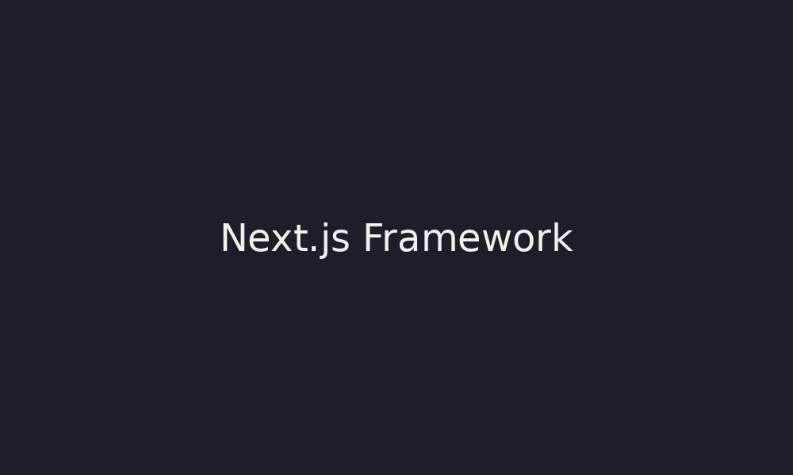

Next.js es un framework basado en React que permite desarrollar aplicaciones web modernas con alto rendimiento.
Permite crear aplicaciones web optimizadas utilizando renderizado del lado del servidor, generación de sitios estáticos y aplicaciones híbridas.